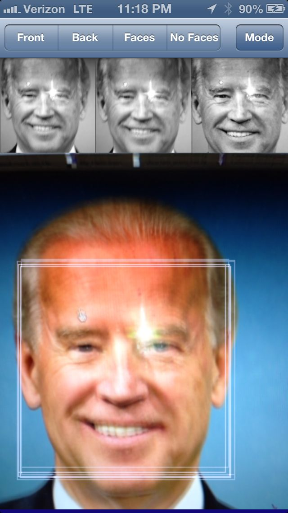
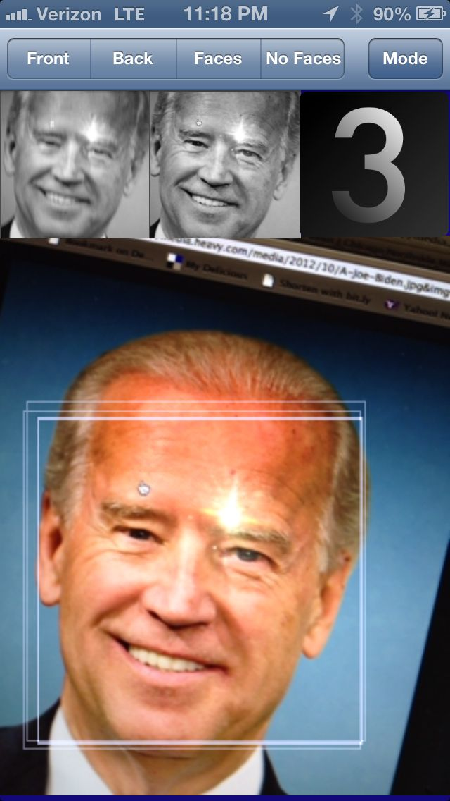

Getting good results with PCA-based facial recognition algorithms depends on correcting for differences in lighting and alignment between the faces. Widely used techniques for correcting for lighting include using histogram equalization or discarding the first eigen vector. Techniques for correcting for alignment differences often involve locating facial features such as the eyes and then rotating the face.
I found these techniques problematic. The corrections for lighting can indeed reduce the impact of overall illumination effects but don’t work for side-lighting scenarios. Face alignment methods are complicated and error prone. In the case of eye alignment one would presumably use additional haar cascades to locate the right eye and the left eye which in turn are error-prone and repeat many of correction problems we have with faces.
It seems that face recognition problems stem from an overly permissive face detection algorithm. The haar cascade that comes with Open CV (called ‘frontalface_alt2’) is indeed very good at detection faces, including rotated faces. It seems it was trained with a sample set that included rotated faces and faces in all different illumination conditions.
Thus constraining face detection so that it only detects horizontal well lit faces would make face recognition much more accurate. That was my hypothesis at any rate and I decided to give it a try.
To this end I used the Open CV tools to build a training set that included only horizontal, full frontal and well lit faces. In the negative sample set I included faces rotated along the Z axis. A better negative set would have included faces rotated along the X and Y axes as well, but I didn’t do that. (By Z axis I mean an axis running vertically through the face).
The resultant cascade is available on https://github.com/rwoodley/iOS-projects/blob/master/FaceDetectionAlgoCompare/OpenCVTest/haarcascade_constrainedFrontalFace.xml. There is a sample iOS application there as well that allows you to compare this cascade with frontalface_alt2 as well as one other cascade.
I was quite pleased with the results. The detection only works on well lit, well aligned faces. This puts the onus on the user to submit a good face. I realize this scenario won’t work with everyone’s system requirements, but in my case it was quite useful.
See the sample output below from my test iPhone application. I aim the camera at a photo of Joe Biden. Above his face are 3 smaller faces in grey-scale. These represent the faces detected by an LBP cascade, the Open CV alt2 cascade and my constrained cascade respectively.

Now see the sample below where Joe Biden’s photo is tilted. The first 2 cascades still find his face, but the 3rd one (the constrained one) does not.

 Face Recognition System Design Considerations
Face Recognition System Design Considerations